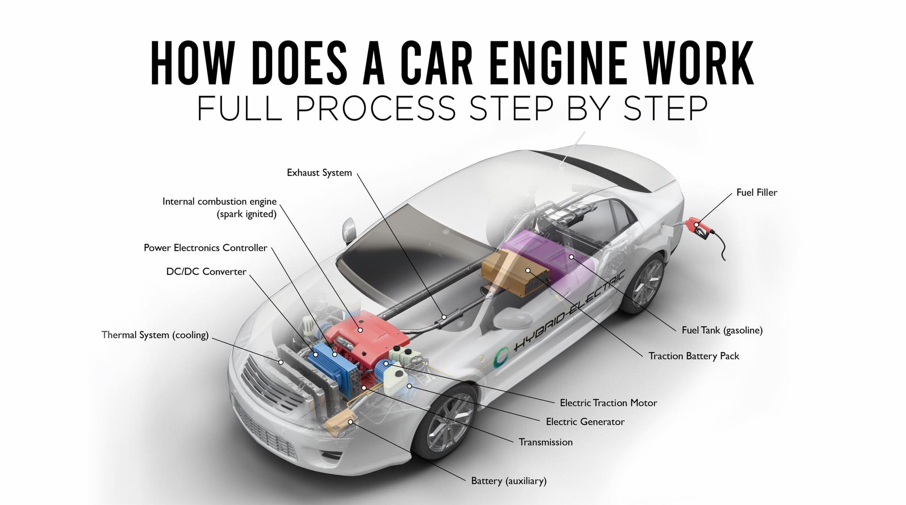

history of cars
On January 29, 1886, Carl Benz applied for a patent for his “vehicle powered by a gas engine.” The patent – number 37435 – may be regarded as the birth certificate of the automobile. In July 1886 the newspapers reported on the first public outing of the three-wheeled Benz Patent Motor Car, model no. 1.
process of its production
Once the parts of the body are manufactured onto the car, it will undergo detailing. This includes cleaning, layering chemical formulas for protection against corrosion and scratches, and painting.